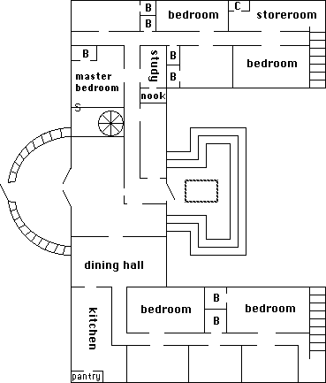
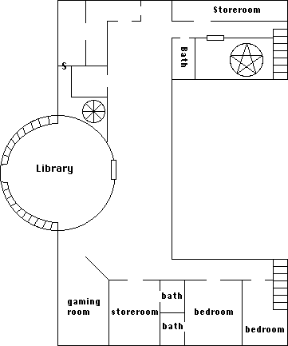
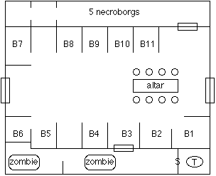
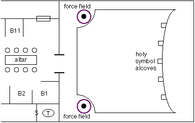
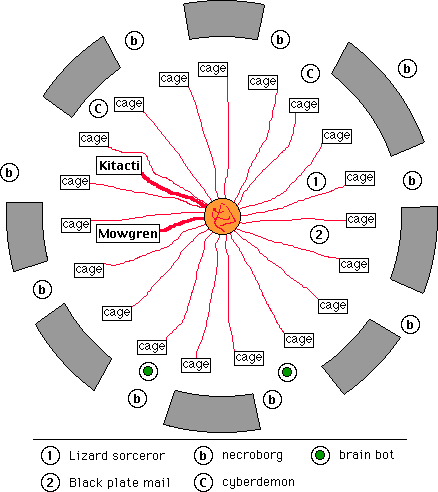

Episode IV: Smells Like Plasma, Tastes Like Chicken! |
urious goods. It didn't look like much, a simple weather-beaten
storefront with faded lettering on the door. It had not been there a moment
before, but when Fry looked again there it was. He thought that somewhat
peculiar, and called the rest of the party over. Edwin's shop had moved
again and was now in Bazilar.
The Narrator
The party had only just gathered in front of the door to Edwin's
shop when a strange man dressed in a concealing hat and overcoat strode
up, looking steadily at some device on his wrist as he walked. He did not
notice the group until he was almost in their midst. Startled, he stopped
looking at his wrist and continued on to the next shop as though window
browsing. Blackhawk, Armsman extraordinaire that he is, impressed the stranger
by fumbling his Quickdraw maneuver and sending his shotgun crashing through
the plate glass window of Edwin's shop. Attempting to dive after his gun
he hit his head and fell to the street. The rest of the party used the
door like normal people, with Blackhawk stumbling through after.
Inside was the familiar extradimensional shop filled with books
and lore. From the inside there were no plate glass windows, though there
was a potted plant to one side holding Blackhawk's shotgun. Blackhawk thanked
Mathilda and retrieved the gun. Mathilda is Edwin's assistant, whose physical
form is constantly changing. Mathilda went from being a potted plant to
bread mold to an orangutan to a teenaged boy in the span of about five minutes.
He is able to move and function regardless of his form, but can only speak
while human. Mathilda said he has no control over this change.
Edwin's pointy hat jutted above the desk in the rear of the
room. Edwin said he had been expecting someone else, "Black
Cross's friend with a message for our guest". Sasfiry opened the
front door and motioned to the strange man to come in.
Prophet's account book
Stardate 2476.5: completed delivery of message as
contracted. Subject located in Bazilar, establishment named
"curious goods". As suspected, subject is a Demon of
Perdition, standard classification Demonicus Annoyus Rex.
Perdition natives are not targeted for immediate termination. Subject
name is Pyreforge, Thane of Perdition and Lord Bishop of the Third
Carnal Pit. Message delivered without incident. Pyreforge swallowed
message crystal for playback. Payment promised through normal means.
Subject left the establishment. Sensors detected formation of a
gateway to Perdition. End of entry.
Edwin's notes
The conflict with the Unlife is intensifying. Rifts on other
planes are opening up, and Kulthea is being used as a dumping ground. Old
Masters long thought lost are being heard from again. There are indications
that Andraax himself is again active on Kulthea.
The situation in Zor is still dangerous. The Unlife has obtained
an amulet which will protect them from the Heart of the World. This amulet
would allow a powerful minion of the Unlife to penetrate the great Earthnode
at Zor and tap into its power. There is a stronghold of the Unlife on a
the first Pale where the amulet is probably hidden. I can think of no better
group to retrieve the amulet than these adventurers. They will need assistance,
which would best be recruited at the Gathering of the Ascension.
Frisbee's report to her monastery
It would be three weeks before the gathering of the Ascension,
during which time Edwin instructed us to keep our heads down and leave
the shop only when necessary. We had been traveling constantly for several
months, and all welcomed the break. I spent the time in meditation on my
Path and in study in Edwin's extensive library.
Chantille and Fry were rarely seen during this time without
a book in their hands.
The strange little goblin Shizlink finished the enchantment
of the armor worn by the various party members. I can discern no difference
in my leather coat since before Shizlink began, but Chantille tells me
that it does radiate a slight magic now. Shizlink claims that the technomagical
enchantment will make the coat more resistant to the firearms of the Unlife.
Blackhawk and Sigmund located a firing range deep within the
shop for target practice. Sigmund asked me to demonstrate basic martial
striking technique. He is quite strong, but lacks form and subtlety.
Sasfiry sat in intensive study of the medical database and instructional
materials the Coalition commander in Mopheus had given us. She said she
finds the Coalition medical practices stuffy and overblown but sometimes
effective, though she cannot understand their complete ignorance of the
benefits of magical healing.
I described in a previous report the tear in space which Edwin
had shown us, through which the Unlife is able to enter our plane. Edwin
said that he cannot remember exactly when the tear opened, nor can any
of the Loremasters. He believes it was no more than 10 years ago, and that
the tear must have some time-warping effect such that no-one remembers
precisely when it opened. There may be a connection between the tear in
space and the Sickness in Bazilar, which also became much worse approximately
ten years ago. I urge you to scour the records of the Golden Path for the
past decade to look for additional correlations.
The Narrator
Prophet, an old friend of Black Cross, introduced himself to
the group. He had been an armored trooper in the Coalition strike forces,
but became disillusioned some years ago and went AWOL. He has been working
as a demon hunter since then, aided by a demon tracking scanner on his
wrist and his suit of powered armor (which was hidden in the forest outside
of Bazilar). Fry later helped repair some minor systems failures which had
developed in the armor.
The party had three weeks in Edwin's shop in which to train
and prepare. During this time Edwin taught Chantille a ritual which would
transport the group to southern Emer to join the Gathering of the Ascension.
Prophet and Fry went through the initiation ritual as the rest of the party
had done, emerging with the mark of Ascension burned into their forearms.
At the end of the three weeks, the party gathered most of the
equipment which had been stored in Edwin's shop. The first Pale is a dangerous
place, and all of the heavy firepower was packed including the Plasma Repeater
Rifle and the Horn of Siege.
The party left Bazilar without incident and gathered at the clearing where
Prophet had concealed his armor.
After several tries, Chantille was able to invoke the ritual
Edwin had taught her which opened a shimmering gateway at the far side
of the clearing. One by one the party entered the gate, finding themselves
still in forest but a distinctly sub-tropical one unlike the temperate
clime around Bazilar.
The sounds of feasting and celebration made the location of
the Gathering obvious. There was a shimmering, translucent wall surrounding
the Gathering which was a powerful spell to repel evil. Passing through
it revealed a large clearing with three large bonfires, around which several
hundred mannish beings drank and talked. There were also a large number
of fairies flitting about. The tremors created by Prophet's powered armor
marching into the clearing attracted some attention, but once it was parked
and idling people returned to their conversations.
Shizlink's hidden computer file
Me sit around campfire, work maintain powered armor. Me hear
Merlogi voices behind! Me banished from Merlogi, not hear Merlogi many
years. Me point gun, order come out! Three goblins come from forest, Twek,
Mop, and Bop. Them say trouble underground, Grey Orcs taking over. Want
me return, help fight. Me want know how them get Emer, them say follow
me through gate from Bazilar. Me no can go back now, me must go First Pale
recover amulet.
The Narrator
The goblins were unclear on exactly what was going on underground,
but these three were not exactly the best and brightest of the Merlogi
race. They did know that the Grey Orcs had become very aggressive, and
were obviously being backed by some outside power. The other Orcish races
had declared war on the Greys. Twek, Mop, and Bop were also not sure what
they wanted Shizlink to do, they just remembered he was very smart and
probably would have made powerful friends in the time since his banishment.
Shizlink decided the Merlogi would have to wait until their business on
the first Pale was finished.
Many of the persons at the Gathering mentioned the coming of
the High King. No-one knew exactly who the king was, though many had their
theories. Some said he was a powerful Loremaster returning to Kulthea,
others that he was an ancient Elvish king. The High King would arrive at
the Gathering in three days.
The party split up to learn as much as they could in that time.
Sigmund went to a tent where the clans of the High Men had gathered. He
found little news save that the Midnight Brotherhood, the Magent group
with which he had served his apprenticeship, had disbanded. He was also
able to trade a blaster and an emerald for an enchanted chain hauberk.
Chantille flitted about with the Fey-folk, though given the attention span
of the average fairy she got little information from them. She did find
a brownie willing to sell her a magical belt of protection.
Sasfiry located an encampment of the followers of Kieron. The
sect had faltered in the five hundred years she had been imprisoned, and
was considerably less numerous and less joyous than she remembered. The
priests said that with the coming of the dark times thirty years ago their
numbers had begun to dwindle, as it became more difficult to bring out
the joy in people's hearts. Sasfiry led them in song and dance, inspiring
the followers of Kieron with songs thought lost centuries before. One of
the priests was particularly attractive and attempted to seduce her. In
response she led _all_ of the priests and priestesses into the tent. Three
days later Sasfiry emerged feeling energized and refreshed, and looking
for a cup of morning brew. Those in the tent with her would be sore for
at least a week; obviously the followers of Kieron had slacked off in their
physical fitness in the last 500 years.
Frisbee found four monks of the Golden Path in an encampment.
She approached the senior monk to report her travels over the past few
months. Frisbee also obtained ten doses of mandrake root from the senior
monk, useful for fighting demons of the Pales. When she was finished, one
of the junior monks approached her. He had been given a small round crystal
some time ago, and had been instructed by his master to meditate on its
purpose. His meditations had been inconclusive, but he was certain that
his Path crossed Frisbee's and he was to give the crystal to her.
Fry marched into the forest surrounding the clearing in
search of the dwarven encampment. He was not really welcome, but his
presence was tolerated by the dwarves. They had been laboring to
produce weapons and armor for the "lesser races" to use in
the coming battles with the Unlife. "Lesser races" of course
refers to everyone who is not a dwarf. Fry's attempts to engage the
dwarves in further conversation were rather unsuccessful, and he
staggered out after sharing only seven mugs of ale with them.
The Narrator
The morning of the third day was filled with apprehension. The
arrival of the High King was expected at any time. Several hours after
dawn a flying ship was spotted, similar to the one the party had hired
to cross the Sea of Fire (in a previous
adventure) but larger
and equipped with gold and silver fittings. The ship was accompanied
by winged humanoids who were easily identified as Amarrishi as they drew
closer. The ship held position above the clearing as six Amarrishi bore
the High King and Queen down on a platform. The King was an impossibly
old High Elf. The elves at the Gathering fell in line to pay homage, including
Frisbee and Sasfiry. All others were blocked by the guards. Later the King
addressed the Gathering, thanking them for their continued efforts and
warning of the dangers to come.
Frisbee noted that many of the Amarrishi stared openly at the
lance she carried, which had been
recovered from the body of one of their brethren in
Terek'Knev.
She approached one of the guards, who told her that the lances were held
in reverence and carried markings of the clan which bore them. Frisbee
returned the lance to the guard for conveyance to its rightful owners.
She told him that its wielder had died in the assault on Terek'Knev many
centuries before. It is difficult to read the facial expressions of the
Amarrishi, but this one seemed pleased and honored by Frisbee's actions.
Prophet's account book
Stardate 2479.3: There has been a security breach in the powered
armor. The fairies managed to get inside and clean it. The whole thing
smells of flowers now. The external plating has been scrubbed and brightly
painted and draped with floral garlands. Blackhawk calls it "the
Technicolor Dream Armor". End of entry.
Blackhawk's log, stardate 2479.3
Three groups began forming to one side of the clearing, roughly
thirty in each group. We were assigned as a fourth group, and were directed
to our guide at the edge of the clearing. He was a werewolf, and not very
talkative. A quick mental probe revealed his name was Carlbath.
My companions gathered about, including the three goblins that
had been annoying Shizlink for the past several days. Carlbath led us into
the forest at a run. Somehow he opened a dimensional portal, though I didn't
see any field generation equipment. The landscape changed as we ran, becoming
a desolate plane by the time Carlbath called a halt. He said he would know
when our mission was accomplished, and would meet us here to take us back.
He then ran back the way we had come and disappeared. The three goblins
had not made the transition with us but they were just fodder anyway. I
set our current location as (0.0.0) in the tactical scanner and told Prophet
and Fry to do the same with their equipment. The scanner in Prophet's armor
had the highest power and detected a structure a few kilometers away which
must be the objective.
We set out on foot. Prophet called a halt after a short time.
His tactical scanner had detected five targets moving rapidly toward us.
We formed a firing line, and waited until the targets came into range of
the magnagoggles. They were cat shaped but with enormous fangs, horns,
and claws. Prophet said they were Traags, not really demons but often found
in their company. Fry and Sigmund opened fire at extreme range. Fry's MLA
pistol did some damage to two of them. Sigmund landed a couple arrows with
a longbow, but the Traag were not affected by primitive screwhead weaponry.
Urk got one with some kind of paralysis arrow [Editor's note: The Traag
was turned to stone by the basilisk bow].
As they came within range the rest of us opened fire. The Plasma
Repeater Rifle left satisfyingly large holes in the creatures, as did the
blasters and various firearms the rest of the group carried. The creatures
must be heavy and strong to build up tremendous inertia, one skidded fifteen
feet after its legs were blown off by a plasma bolt. The last Traag was
killed as it charged Shizlink, and died just before reaching him.
The Narrator
The first Pale is a dreary place. Quite literally. Everything
appears in various shades of grey, there is no hue or brightness. Even
the colors of Sasfiry's robe seemed muted and dull while on the Pale. Outside
the Pale, her ornate silk robes generally attract attention [Editor's
note: and sometimes signal low-flying aircraft]. Visibility was less
than five kilometers to the horizon.
Several of the fighters had noted that their weapons did not
seem to pack the same punch against the Traags as they would have expected.
The Plasma Repeater Rifle should have incinerated its targets, instead
it merely blew large holes in them. The blasters singed and burned their
targets but did not stop them. Shizlink used a technomagic bladerune to
enchant some of the party's ammunition with a magical charge, in the hopes
that an enchanted weapon would be more effective against demons and devilkin.
Edwin had told the party that the amulet they sought contained
a shard of the Heart of the World, but he was unable to describe what it
looked like or how to locate it. After a brief discussion, the party arrived
at three potential plans for retrieving the amulet. Plan #1 was to sneak
into the fortress to retrieve it by stealth. Plan #2 was to barge into
the fortress with guns blazing to retrieve it by force. Plan #3 was to
use the Horn of Siege to level the place from a distance and dig through
the rubble. The party determined that plan #3, though possessing style
and panache in droves, was likely to lose or destroy the amulet in the
rubble. The choice between stealth and force could be made after assessing
the situation at the stronghold of the Unlife.
At this point Frisbee remembered the crystal shard
given
her by Ninghal, and upon examination discovered that it was flashing dimly.
It flashed more rapidly as they approached the structure pointed out on
Prophet's scanner. The shard was another fragment of the Heart of the World,
and was reacting to the presence of its twin. Chantille was able to attune
to the crystal and felt a mental nudge in the direction of the keep.
As they approached the outlines of the structure became clear.
It was a large manor house with a central domed roof and two wings. It
was 250 feet by 100 feet in area, and four stories tall at its highest point
[Editor's note: and it eerily resembled Monticello]. Hints of movement
above the dome of the manor drew the group's attention. Though the dim
gray lighting made it difficult to see it appeared to be a large winged
lizard circling. By the time the magnagoggles could be focused on the area
it had descended behind the manor, and only the long tail was clearly visible
as it dropped from view.
Fry's notebook
This was bad, very bad. The architecture of the mansion was
not native to the first Pale, I was sure of it the instant I laid eyes
on it. In its general form it was reminiscent of edifices in the southern
cities of Emer, though obviously in a state of extreme disrepair. All of
the windows were broken out long ago and the exterior fascia was nearly
ruined. This of course made it difficult to determine its age as the workmanship
of the glass is a prime distinguishing factor, nonetheless I was able to
pinpoint its construction as occurring between 1000 and 1020 years ago.
How it came to reside on the first Pale is still a mystery, though I have
some theories which I will reveal when the time is right.
The sand of the plains grew suddenly dense and compacted near
the manor house, and resembled a dried mud flat more than anything. There
was a field of deep refuse strewn all about the house which ended at the
same sharp boundary almost exactly one hundred feet from the walls. Close
examination of the flotsam and jetsam revealed a jumble of artifacts from
vastly different eras, laid out in a pattern which made no archeological
sense. The materiel had not been deposited there over time, rather there
was a mixture of different ages spread evenly across the plain. I believe
this was done in a deliberate attempt to mislead me and hide the true import
of the find. However I am not so easily discouraged; the multiscanner picked
out a number of items scattered amongst the debris whose material composition
made them especially interesting.
The first interesting item registered as a variant of Duranium,
and appeared to be the shoulder piece to a suit of armor. The armor was
sized to fit a ten foot tall humanoid, and was inscribed with alien lettering.
In another part of the site there was a metal tablet densely inscribed
with runes. The language could not immediately be identified, though I'm
sure I'll be able to identify it when it can be examined in better light.
A section of a broken sword blade was unearthed which the multiscanner
was unable to analyze for material composition. It is a black metal with
flakes of silver. The scanner is 64% certain that the blade is machine
made due to the smooth molecular structure though it cannot identify the
manufacturing process. I believe the blade was forged of meteoric Eog via
magical means.
The final item identified by the scanner was a portion of a
large, handled bowl. The scanner registered it as 99.9% pure gold, but
the bowl did not have the crumbly character of gold of that purity. Also
the color was wrong, it appeared with an almost rusty hue. There was a
decorative band painted around the rim of the bowl, but it was otherwise
unadorned.
I packed away all four of the items for further study. In the
future the Unlife would have to try harder to deny me my prize.
The Narrator
Four kilometers to the northwest of the manor house could be
discerned some kind of structure. The distance lenses revealed it to be
more of a group of ruins, though some of the ruins did look curious. Prophet
can run at up to 45 kilometers/hour in the powered armor, and determined
to make a brief investigation while the rest of the party examined the
manor grounds and field of rubble. Chantille accompanied Prophet, riding
along in an aft storage compartment as he ran.
The ruins consisted of hunks of metal embedded in the ground
in a roughly one hundred foot diameter circle. The ground was a rocky amalgam,
very different from the native sand of the Pale, and The largest chunk
of metal had been painted with runes, though the paint had faded and was
peeling away. Chantille was unable to read the runes, though she determined
that they were not magical. A Presence spell cast near the largest
hulk of metal detected a sentient presence some twenty feet to the north.
Moving slowly in that direction Chantille discovered an area of intense
cold which radiated an almost palpable aura of sadness. From her knowledge
of the nature of the undead Chantille knew that she was standing in the
middle of a ghost, though this one seemed unable to move from the spot.
Before the spell wore off it detected another presence just like the first
about fifteen feet away.
Chantille
I thought it most unusual zat ze spirit was unable to move,
and thought zat it might be trapped in zis place somehow. Ze Ghosts are
often able to understand ze spoken language of ze living, so I asked aloud
if I zere were anything I could do to help it. Ze Ghost responded with
a wave of sadness even stronger zan before. I tried a few more questions,
but received only feelings of sadness. When I told ze Ghost zat we would
leave ze first Pale soon, I nearly fainted from ze overwhelming despair.
Nonezeless zere was nothing I could do for it, and we were needed back
at ze manor house. Prophet pulled a piece of ze metal out of ze ground
so it could be studied, and we returned to ze party.
The Narrator
The rest of the party had circled around to the back of the
manor house when Prophet and Chantille returned, exploring the field of
rubble. The field extended from the manor to an abrupt boundary all the
way around to the back of the structure. Directly behind the manor there
was no such sharp boundary as the rubble extended out several hundred feet,
thinning out as it trailed away from the house.
Attempts to look in through the windows were unsuccessful, even
using magnagoggles saw only an inky blackness. There was a back door, wooden
and apparently undamaged in stark contrast to the rotting window frames
seen elsewhere about the house. The door was closed. Blackhawk attempted
to open it and felt a wave of fear as his hand easily passed through the
illusionary door. The rest of the party saw the door fall to pieces. Chantille
dispelled the magic and the entire party was able to enter the structure.
The entry hall extended up two stories in the central tower.
Wrought iron and glass doors blocked the way into the rest of the manor
house. Sigmund picked the lock, leading the way into the central hallway.
To the right was a large dining hall, where centuries before several tables
had been laid out for a feast which had since fallen to dust. Out of the
corner of one's eye the outlines of feasting diners could barely be seen,
outlines which disappeared when the first person stepped into the room.
Beyond the feasting hall lay the kitchen, with a fireplace and
locked pantry. The lock was easily picked revealing four shelves covered
with the dust of whatever had been stored there. A careful search uncovered
a hidden compartment in one of the shelves, inside of which was another
piece of the rusty-gold bowl dug up from the field of rubble. When the
two pieces were lined up and pressed together there was a flash of purple
light, rejoining them. Roughly two thirds of the bowl was now whole.
Continuing deeper into the right wing of the manor, the party
explored what appeared to be guest rooms. In the furthest room Sasfiry
found a heart shaped silver pendant under a mattress which radiated a slight
magic. She attuned to it and found that there was a small compartment inside
the pendant which preserved whatever was placed therein. Opening the compartment
revealed a small white pill which also radiated magic. No one volunteered
to swallow the pill so it was stashed away for later investigation.
A stairway at the end of the wing led up to the second level.
Not wanting to be trapped in the middle if there were troopers of the Unlife
present, the party determined to clean out the rest of the first level
before heading upstairs.

Prophet's account book
Stardate 2479.6: Armor is too tall for effective indoor operation,
crouching down for two hours leads to painful muscle cramping. Powering
down motive systems for egress and breaking out Light Body Armor from external
storage compartment. Action Item: acquire more effective body armor for
backup use in future missions. End of entry.
The Narrator
Returning to the central hallway, the party continued exploring
the first floor. The first room entered was a study, filled floor to
ceiling with books. To Fry's overwhelming horror some 95% of the volumes
were so deteriorated that they fell to dust with the slightest touch. A
search of the remaining 5% was quickly accomplished. While searching Sigmund
noticed a book bound in red leather on a shelf he had already searched.
It had not been there before. He reached over to the book and felt a presence
invading his mind the moment he touched the binding. The Will contest was
over in just an instant. Sigmund retained enough control over his mind
to drop the book on the floor and end the battle.
The title on the binding indicated that the book was a comprehensive
treatise on Demonology. Chantille decided that the importance of the knowledge
contained therein outweighed the risk. Steeling herself mentally she opened
the book. The contest of Will continued for several seconds, during which
time Chantille steadily beat back the spirit inhabiting the tome. In the
end the spirit was subdued. Only Prophet was able to read the language
of the text though he didn't know how or why. He read the first few pages
aloud, finding that the tome was written by Nyon the Mad in stream-of-consciousness
style, and that it was supremely detailed and supremely disorganized. Intense
study of the book would have to wait until the business on the Pale was
complete.
In an office nook adjacent to the library Sigmund found a
quill pen hidden in a compartment
under a desk. It was magical, which allowed it to survive unblemished while
nearly everything else in the mansion disintegrated. Attunement revealed that
it could aid in the inscription of spells on rune paper.
Chantille had attuned to the shard of the Heart of the World,
and attempted to use it as a focus for a Locate spell to find the
shard in the amulet. The spell did not detect the amulet within range.
Shizlink programmed his repair scanner to be a frequency counter to measure
the pulsing of the shard. Unfortunately the frequency of the crystal did
not change as the party roamed about the mansion, providing no clue of
the exact location of the shard.
Urk's letter to his mother
We had searched most of the first level of the mansion without
encountering anything dangerous. It certainly didn't seem like a stronghold
of the Unlife, or I suppose more properly it did not seem like what I was
expecting a stronghold of the Unlife would be like. The most dangerous
thing we'd found was a book. I would have felt pretty funny if I my friends
told me to attack the book, but the little fairy Chantille took care of
it without combat.
The furthest room in the wing looked like a storeroom. There
was a small room to one side which was very, very cold. It was very strange
mother, I could feel it get suddenly cold as I stepped through the doorway
and warm as I stepped back. The far wall was almost freezing, chilling
the entire room. I concentrated for a moment to make the metal spike pop
out from my wrist, and used it to chip away some of the stone along the
back wall. There was a metal plate buried behind several inches of stone,
and the metal was almost icy. When I had dug out along all of the edges
of the metal Blackhawk used his magic rapier [Editor's note: vibroblade]
to cut deeply into the wall around the edges. Together we pulled a one
foot square metal box out of the wall.
We dragged the box into the larger room. It was almost glacial,
and frost started to form on it. There was a seam running down the center
of the box, but the seam was not deep enough for me to use my spike to
pry open. Blackhawk tried to use his rapier to cut the box open, but a
lightning bolt surged through him, breaking his magic sword and burning
his chest. He wasn't hurt badly, and Shizlink fixed the sword later.
The little fairy dispelled the evil magic which attacked Blackhawk,
and Sigmund cast a spell to unlock the box. There was a blinding flash
of light when the box opened. The inside of the box was lined with black
velvet, and nestled at the bottom was a golden symbol of a deity none of
us recognized. Sasfiry could tell that the symbol was very holy, and very
powerful as though it were the symbol of an avatar.
The Narrator
[Editor's note: Don't look for any hidden meaning in the verse. It
has nothing to do with the adventure.]
Sigmund's Journal
The Narrator
The Narrator
Prophet's account book
Down the hallway was what appeared to be the master bedroom,
draped with what had once been fine tapestries and rugs. In a drawer of
the dressing table was a silver comb
slightly tarnished with age and which radiated a slight dweomer. Sasfiry
attuned to it, and placed in her hair it enhanced her already considerable
appearance. Prophet and Fry fell immediately under the spell of her beauty.
She resisted the urge to command them to bark like dogs or some such, and
removed the comb from her hair. Being the party member most in need of
a makeover, Shizlink kept the comb.
The multiscanner had been employed to map the building as it
was explored. Accounting for the size of the rooms thus far explored and
the thickness of the walls, there was a four foot by twelve foot space
behind the wall of the master bedroom. A quick search located the tell-tale
outline of a secret door. Sigmund located the mechanism and pushed the
door open, and was rewarded with a Cold Bolt for his trouble (no
serious damage, Sigmund is friggin' huge after all).
The concealed space contained a spiral staircase heading up
to the second floor. It was felt that since the Unlife went to some trouble
to protect this staircase with magical traps, there must be something
interesting above it.
/home/shizlink/encrypted/poetry.txt
The Gnomes adore their children
but if they only knewed,
that Goblins also love them
as they are quite tasty when stewed.
The staircase were damned narrow, forcing single file the whole
way up. It led to a small room where two people could stand abreast. There
were a doorway leading to a larger room. When Blackhawk stepped through
an apparition appeared. It were deep black and glowed of evil, its flesh
rotting from its bones. It were a Wraith or I'll be a bastard. It screamed
and advanced on Blackhawk, clawing at his chest. I drew me Claymore to
charge the foul thing but it were over before I'd taken a step. Blackhawk
sent two shotgun blasts into its chest, driving the damned thing back to
whatever evil pit it crawled out of.
A door at the end of the wing was locked, but Prophet took
care of it. Prophet's definition of "pick the lock" varies
somewhat from the conventional: he blew a large hole in it with a Mk
III blaster. Subtlety is obviously not his forte. The door led into a
summoning chamber. A ten foot pentagram was inlaid in the floor, and
shelving along the walls held various catalysts and corpists used in
demonic summoning rituals. Most of the contents of the shelves were
unidentifiable, but there were three books in reasonably good
condition.
The first was the "Book of Runes". When Fry
reached for it a Cold Ball rained down upon everyone nearby,
which nearly killed Chantille [Editor's note; she used a Fate point
to re-roll a 00 critical]. After dispelling the trap and invoking
quite a bit of healing magic the Book was found to be an instructional
tome for two evil spell lists (Dark Contacts and Dark Summons, if it
matters).
The second book was the Tome of Power which, inconceivably,
was not trapped, locked, or dangerous in any way. This made the party
quite nervous as books had thus far been their most dangerous opponents.
Eventually they got over their paranoia long enough to determine that it
was an evil spell book containing the entire Entity Summons list.
The final book's title was written in High Elvish: The
Incunabula of Mazarin. According to the spine it was penned during the
second age of Eire some 10,000 years ago. Lulled into a false sense
of security by the non-threatening Tome of Power, Fry reached for the
Incunabula. The Will contest began immediately. Fry felt his mind
invaded and overwhelmed. He stood for a moment studying the book, and
then felt an imperative urge to find a toilet. He dropped the book and
ran into the bathroom placed conveniently nearby by a sympathetic GM.
While his bowels merrily purged themselves Fry shouted to the party
that the book was possessed, and that it was an Arcane spell book.
Mere mention of the words "Arcane spell book" sent Shizlink
trundling back into the room. He grabbed the book and won the Will
contest handily. The tome contained the Arcane Summons, Ethereal
Mastery, Metal Lore, and Stone Lore spell lists to 12th level.
A hidden compartment was found near the floor which contained
a ring and a chalice. Chantille attuned to the ring, which had the power
to see hidden things. It also somehow had the power to open a gateway and
push or pull entities through, though it was not clear how to activate
this function. Finally, it was a simply stunning belt for Chantille. The
Chalice was decidedly evil, used somehow in the ritual to summon demons.
The Chalice and books of evil spell lists were left in the room for later
destruction, the ring and Incunabula were taken.
Fry's violent purging ended about an hour later.
/home/shizlink/encrypted/poetry.txt
A Dwarven beard can be great fun
especially when shorn from its wearer,
and woven into rope most fine
to garrote its former bearer.
Progressing from the left wing of the manor to the central hallway,
a glass door was found leading to a library in the central tower. This
was quite a shock, as from the first floor the main entryway appeared to
extend upwards for two stories yet here was a library. Sigmund was unable
to pick the lock, and so cast an Unlock spell. His spell was ineffective
and brought down another Cold Bolt which froze his armor for a brief
time.
Twin stairways were spotted across the library which must lead
down to concealed chambers behind the main entryway on the first floor.
These were presumed to be easier to enter than the magically trapped door,
so everyone proceeded downstairs. The secret doorways were easily found.
When Urk tried to push one open he was attacked by a particularly unpleasant
Cold Bolt which destroyed the flesh on his knees and, perhaps more
importantly, caused a systems failure in his cybernetics. Fortunately it
was a minor blockage in a hydraulic tube which Shizlink quickly corrected,
and Sasfiry was able to heal the frostbite.
Stardate 2479.8: Light Body Armor is insufficient for task at
hand. Re-activation of powered armor systems completed successfully. All
systems are go, all weapon systems report active, chip-lights are green.
Cybernetic link active. Maneuvered into position in front of concealed
door in main entryway. Attempts to break through masonry were
successful. Deflector shield registered slight power surge when hit by
subthermal energy attack, no damage registered. End of entry.
The Narrator
With the concealed door torn from its frame the way was
clear. Calculating the incredible trove of knowledge contained within
the library, Fry dashed up the stairs three at a time. The force of the
impact when his head hit the invisible barrier at the top knocked him
senseless for nearly a minute. The barrier was perfectly smooth and
essentially impenetrable. The vibroblade was with considerable effort
able to scratch the surface, but the break sealed as soon as the blade
was withdrawn. Unlock and Dispel spells had no effect on
the barrier.
Unable to pass the invisible field the party returned to the
second floor to complete its exploration. In the southern wing of the
manor were two bedrooms and a storeroom. Beneath a flagstone in the
floor of the storeroom was a concealed space containing a wooden box
inlaid with symbols. The symbols were reminiscent of the ones painted on
the golden bowl which Fry had been piecing together. Fry opened the
wooden box, and his eyes glazed over briefly as he did so. [Editor's
note: he failed a RR vs Essence. There was no immediate effect].
Inside was a silver decanter inscribed with still more symbols similar
to the ones on the box and the golden bowl. Sasfiry's Item
Analysis spell determined that the decanter had four magical
functions. One of the functions was the containment of powerful beings.
The other three functions were not revealed by the spell.
Next to the storeroom was a gaming room filled with
deteriorating playing cards, chess boards, and a complete set of moldy
RM2 sourcebooks. A set of ebony and ivory chess pieces and a pair of
ivory dice were stashed in Sigmund's pack. The moldy RM2 sourcebooks
were left, of course, as this gaming group uses the RMSS rules.

Tentative probes at the library doors found them still
sealed. Attempts to teleport books out of the library were unsuccessful;
it was as if the entire contents of the library were frozen in time and
space. Careful chipping of the rounded wall surrounding the library
revealed a thin layer of stone covering a metal structure beneath. Fry's
multiscanner analysis of the material said it was steel, duranium, and
two unknown metallic substances. The metal wall was surrounded by some
type of force field which became increasingly slippery as pressure was
applied to it. To a soft touch the wall felt smooth, while a heavy push
would slide off to one side. Prophet suggested (via radio link from the
first floor) that the slipperiness could be from a stasis field, though
of course such things were impossible to build and no one had ever
accomplished it.
Chantille
In order zat we might find a way into ze library, I cast a
Metal Lore spell on ze wall. Zis spell had served me well in ze
past before I was trapped in Terek'Knev, as when I cast it on ze
codpiece of ze prince of Zathrusta to learn zat he was not actually a
he.
Ze spell showed me a great sailing ship, which moved amongst
ze stars in ze heavens. Ze ship foundered and broke apart, with ze pieces
falling from ze heavens to ze earth. Ze largest piece lay in ze crater
from its landing for many years, until ze manor house was constructed on
ze site. Ze spell showed me a strange crane lifting ze section of ze ship,
where ze building was constructed underneath it. Ze building in ze spell's
vision is ze manor house we have been exploring.
Ze little goblin Shizlink cast a different spell on ze wall.
Ze 'technomagic' he wields is very interesting, it is Arcane magic but
is very unlike ze Arcane spells I have learned in my travels. Shizlink
said zat zere were small pathways in ze wall where power could flow, but
zat zere was no longer any power present. I do not understand what sort
of power would require zese small pathways, ze Essaence can easily travel
through solid material.
Sigmund pushed ze crystal from ze Heart of ze World against
ze doors of ze library. Zere was a slight rumbling which spread throughout
ze mansion, shaking everything back and forth. When it was over, ze doors
were still locked.
The Narrator
Having run out of ideas for breaking into the library the
party decided to return to the ruins northwest of the manor house
(which was referred to as the "crash site"). Urk and Sigmund
were hit by Cold Bolts while trying to open the front doors.
Prophet ripped the doors from their hinges. Ever the archaeologist,
Fry discovered a hollow area under one of the stones of the entrance
steps. Prophet and Urk levered the 200 pound stone out of the way,
revealing another small wooden box like the one found upstairs. This
box was also inscribed with symbols similar to the golden bowl, and
Fry's eyes again glazed over when he opened it [Editor's note: he
failed another RR vs Essence]. Inside the box was a three inch
diameter plate of a gunmetal gray material. The plate was inscribed
with similar lettering as the 12 inch tablet found in the rubble field
in front of the manor house.
Chantille cast a Text Analysis spell to allow her to
read rudimentary concepts in a language. The newly found plate
concerned a dedication of something, and listed a large number of
proper names (none of which were familiar). The 12 inch tablet
concerned "sailing". The symbols on the golden bowl and
wooden boxes were ornamental or hieroglyphic in nature, not a written
language.
The entire party then headed back to the crash site.
Shizlink's hidden computer file
Spaceship crash. Must be. Heavy freighter, ground hit,
break up, everywhere scatter. Multiscanner say hull made duranium,
steel, lots of stuff, say "crystal structure unlikely to be
stable". Stupid scanner, metal here five hundred years. No
unstable.
Fry find gizmo buried. Gizmo dense crystal box, two conduits.
Multiscanner say power converter is gizmo. Technomagic spell say gizmo
use anti-matter, better Coalition build able. More spell try send power
gizmo, no worky. Like pissing in ocean, water no turn green.
Blackhawk's log, stardate 2479.9
Chantille directed me to the grid coordinates where she
contacted the "ghost". These primitive screwheads are a
superstitious lot, believing in all manner of ghosts, spirits, and
magical creatures. It's true that powerful emotions can leave residual
traces in an area, but that does not mean they are haunted. Althans
are able to pick out these psychic residuals more strongly by
employing psionic disciplines. I controlled my breathing in the
pattern of deepest meditation and searched for psychometric traces on
the hull fragments.
The change in viewpoint was disorienting at first. I could
see the ship as it once was, a light warship about the size of a
Coalition-built tramp freighter. The viewpoint swiveled aft, where the
rest of a battle squadron cruised. There were at least twelve heavy
warships, escorted by an uncountable number of frigates and destroyers.
The viewpoint swiveled forward, to the object the fleet was sallying
against. It was a tear in space, almost identical to the one in the
holographic projection in Edwin's shop, except this one was crackling
with purple energy around its edges. Its scale was enormous. The visual
image flickered as the ship I was tracing took a hit, and waves of
sadness and death crashed over me. The viewpoint changed again, showing
the surface of a rocky moon approaching fast. That was where the ship
crashed. It had definitely not crashed on the First Pale. How it got
here is a mystery.
The Narrator
It became clear that the crashed ship had engaged in combat
with a rift to the Unlife, similar to the one which formed in the
Kulthean system ten years ago only much larger and stronger. Fry noted
that it was very unusual for the Unlife to attack directly, they more
commonly infected new planes of existence slowly like a virus.
The psychometric projection from the crash site had been
unusually strong. Blackhawk decided to attempt telepathic contact with
the ghost. The answer was immediate, a strong feeling of recognition.
Blackhawk framed a question in his mind: who are you? The answer was
indecipherable. A simpler question followed: did the entity know
anything about the manor house? Blackhawk was answered by a wordless
feeling of negation.
Imagining an image of the Mark of Ascension, which had been
burned into the forearm of each member of the party when they formally
joined the cause, Blackhawk in turn received an image of the symbol
emblazoned on the bow of the flagship of the great fleet. An image of
the holy symbol which had been recovered from the mansion elicited an
image of the same holy symbol inscribed on the breastplate of the
powered armor worn by marine troopers carried aboard the warship. The
tablet which had been found the in the field of rubble in front of the
mansion resulted in an image of a darkened room with a being in the
center totally enmeshed in wires and cables.
The mental link was becoming stronger and clearer, perhaps
as the trapped ghost roused itself from its long slumber. Blackhawk
asked if he could provide assistance, and heard a voice clearly in his
mind: "Destroy the Invaders". Images of the necroborgs
elicited confusion but affirmation from the ghost, as if it had not
seen that particular form but could confirm that the Unlife had been
the ancient enemy. Some members of the party had suggested euthanizing
the ghost using a Repel Undead spell to free it from its long
captivity, but it became clear that the ghost was trapped because its
mission had not been fulfilled. Destroying its presence on the Pale
would not end its suffering.
Blackhawk next retrieved the shard of the Heart of the World
which the party had brought to the Pale with them, and framed an image
of the crystal in his mind. The ghost responded with a panoramic vision
of a great, ancient city made of golden-red material similar to the bowl
partially recovered. The vision moved rapidly to the center of the city,
and indicated that there was a large amount of that type of crystal present.
The ghost had been a member of the crew of the warship which
had fought the Unlife a long, long time ago. Its ship had crashed on a
desert planet. The ghost did not know how it had come to be on the First
Pale.
Blackhawk's log addendum, stardate 2479.9
The entity had identified the holy symbol as having been important
to his race. As a result of the contact with the entity I was as deep in
the psionic meditative trance as I have ever been. I focussed on the holy
symbol, attempting to extract any psychometric energies it contained.
The imagery was immediate and overwhelmingly powerful. The holy
symbol we recovered had been aboard the crashed starship. It was placed
in the center of a darkened room, and glowed faintly from within. A dozen
tall, dark-skinned humanoids with purple eyes knelt before it. They were
Althans.
The vision shifted forward in time, to a point many years after
the ship crashed on the desert world. A human, dressed in primitive screwhead
clothing, dug up the symbol and whatever other artifacts he could carry
off. Typical behavior for a primitive.
One more shift found the human standing in the doorway of a
manor house, the same manor house we had just finished exploring. It was
newly built and stood in a forested area on a world with a bright sun.
Definitely not the First Pale.
The entity I contacted telepathically must be the remnant psionic
energy of an ancient Althan. The technology which powered its ship is far
beyond what Altha possesses today, beyond the best the Coalition can muster.
If Altha possessed that tech today, it could be free of the Coalition occupation
in an instant. The entity is a Progenitor. The Progenitors were Althans.
I am sure of it.
I re-established telepathic communication with the entity. It
responded more vigorously and with a sense of brotherhood. Obviously it
was growing stronger from our interaction. It confirmed that the coordinates
of its homeworld matched the coordinates of Altha. I promised to work to
destroy the Unlife, the ancient Invader. The entity responded with enormous
gratitude. Then it faded away, the unfinished task which held it on the
Pale had been resolved.
The Narrator
While exploring the crash site the party had felt two more tremblors
in the ground similar to the one felt when the shard of the Heart of the
World was pressed against the library doors. It was decided to return to
the manor house armed with new information about the nature of the holy
symbol. A quick multiscanner analysis showed the symbol to be made of gold
and alloys, with a central core of very dense crystal (though not the same
crystal as the Heart of the World). The scanner estimated that the symbol
was some sort of power storage device, though it could not tell the nature
of the power stored.
Returning to the second floor of the mansion, Sigmund carefully
pushed the holy symbol against the doors of the library. There was some
resistance, but by pushing harder he touched the symbol to the door. There
was an audible click, then nothing. After a moments pause Sigmund pushed
on the doors. They no longer felt slippery from the force field, but still
they did not budge. He pushed harder but was still unable to move them.
Finally he realized they opened outwards.
The doors swung open to reveal... something which did not even
vaguely resemble a library. A corridor, roughly 20 feet wide and 15 feet
high, descended at a moderate angle into darkness. The corridor was lined
with precisely machined stone, very smooth to the touch. With a bit of
maneuvering Prophet got the powered armor up to the second floor, and the
party proceeded down the tunnel.
The corridor descended downwards several hundred feet, where
it joined a rough hewn corridor. There were symbols carved into the rock
of the rough corridor which looked like approximations of the symbols inscribed
on the golden bowl and wooden boxes. The rough corridor extended several
hundred feet until it terminated in double doors made of the same material
as the ones in the library. These doors opened easily, to reveal a rectangular
room with an altar in the middle flanked by stone columns. The far wall housed
another set of double doors, while funeral alcoves lined the remaining
two walls. Many of the alcoves were inhabited by the skeletal remains of
humanoid creatures in rotting wooden caskets.

Fry's notebook
This was bad, very bad. These poor souls had obviously died
as a direct result of the efforts by the Unlife to destroy me. However
their sacrifice was not in vain, the great cause they died for lives on
in me.
I examined the largest alcove first. The scanner readout
confirmed what I already knew: the body inside was human. It had been
dead for a very, very long time and was nearly skeletal from the decay.
A silver ceremonial dagger was fastened in a rotting sheath on its belt.
I stashed it away for further analysis. Of the other alcoves, six
contained Althan remains (obvious, due to the presence of six fingers on
each hand) and four contained human remains, again confirming my
suspicions. The other alcoves also contained various bits of silver
jewelry, some inscribed with an image of the holy symbol I recovered
from the first floor of the mansion.
I allowed Sigmund to open the door in the south wall. In the
chamber beyond I could see a human corpse in somewhat better condition
than the ones in the main chamber, laying on a table. When Sigmund walked
through the doorway the corpse sat up, and climbed off the table. It was
moving slowly, and was certainly not a threat to Sigmund. I, of course,
am invulnerable to the Undead.
The zombie staggered into the main chamber as we
backed away. It was working its jawbone continuously, as if attempting
to communicate. It stopped near the center of the room and stood facing
Sigmund. It raised its arm to point, at which time Urk very much wanted
to bash it. I found its behavior very unusual for the animated dead and
ordered Urk to hold his place until we could ascertain the creature's
purpose.
The Narrator
After several fruitless attempts to read its lips (it had no
lips), the zombie turned and shambled back through the doorway from
which it had come. It led Sigmund and Fry into the far chamber, where a
Althan corpse lay. The human zombie stood next to the table, working its
jaw continuously. Blackhawk was carrying the Holy Symbol. Given its
connection with the ancient Althans, it was thought that Blackhawk
should present the symbol to the dead Althan.
When Blackhawk touched the symbol to the body a psychic battle
began. Psionic combat is instantaneous. Blackhawk defended himself ably
but was overwhelmed. The rest of the party saw a ghostly image extend from
the Althan corpse to merge with Blackhawk, then he slumped to the floor.
Revived, he was unsure of what had happened and felt no different. Chantille,
drawing upon her knowledge of Undead lore, said that the image of the Althan
visibly absorbed into Blackhawk was not normal during possession attempts,
and was unable to identify what had happened. The human zombie crumbled
into a heap as soon as the psychic combat began.
While the others tended to Blackhawk, Fry examined an obvious
concealed space in the far corner. Bashing through the plaster into the
small room, he found a table and two chairs sized as if for children. On
top of the table was a crystal flask containing a clear liquid, and a
silver plate with a loaf of bread. The etching on the plate did not
match the cuneiforms on the walls or the wooden boxes. The multiscanner
determined that the liquid in the flask was pure spring water. The flask
was not sealed and had no stopper, yet none of the liquid had
evaporated. Likewise the bread had been preserved as if freshly baked.
Both the flask and the platter were determined to be magical.
Urk's letter to his mother
I still have nightmares about it. Oh, my poor Frisbee!
We hadn't seen much danger on the Pale. There was the occasional
Traag and zombie, but nothing like what we had been through in some of
our previous adventures. I guess thats why we all let our guard down a
little.
Sigmund had been opening most of the doors (and getting hit
by most of the magical frost bolts) thus far in our exploration of the
manor house. Frisbee, to my everlasting regret, decided it was time for
someone else to do it. She marched up to the door in the north side of
the crypt. I was a little nervous, but I think Frisbee gets annoyed at
me when I am over-protective though she is too polite to say it. I lined up
behind Blackhawk to back her up and let her open the door. Woe, if only it
had been me in front!
I could see over her shoulder as the door swung open. The first
thing I noticed was the teeth, made entirely out of metal and looking strangely
out of place on the otherwise featureless face. Then the necroborg fired
its shotgun point blank at my poor Frisbee! Her Golden Path training was
superb, and she tried to dodge out of the way. I wish she had, I would
gladly have taken the blast to spare her. But it was not to be. The slug
hit her square in the stomach, cutting a deep channel through her innards
and severing an artery. Blood poured from her body. She was blown backwards
into Blackhawk. It was horrible!
I grabbed Frisbee instantly and picked her up, while Blackhawk
dealt with the Unlife. I carried her to the nearest alcove away from the
fighting. I tried to stop the bleeding but there was so much of it I couldn't
do it. I started to panic.
Sasfiry rushed over to help, and somehow I found the healing
device Shizlink had made for me. Sasfiry used the Coalition regenergun
on the wound, which was still gushing blood. I pumped charge after charge
of the device into Frisbee, trying to keep her life's essence from fading.
I've seen war, and the carnage it inflicts on soldiers. Never
have I seen someone spared who was so badly injured. And yet, Frisbee lives.
Sasfiry used the regenergun to repair the artery, stanching the bleeding
and closing the tissues around it. Then she patched up the organs which
had been punctured by shrapnel. She had me help remove some of the twisted
pieces of metal before sealing the wound. All the while I used the healing
device to keep Frisbee alive while the surgery was performed.
She lives, mother. She hasn't regained consciousness yet, but
the damage to her body was repaired quickly enough that Sasfiry thinks
she will recover fully.
The Editor
In game terms, Frisbee had taken 160 points of damage and
an 'H' critical. The critical damaged several organs and caused 15 hits/round
of bleeding. The damage was enough to exceed her constitution, meaning
she was dead and the countdown to soul departure had begun.
Urk and Shizlink expended continuous charges of the healing
wands while Sasfiry went to work. The wands raised her back above her constitution
limit before the round ended, and again the next round (after more bleeding
damage had been tabulated). Since Frisbee was never dead for an entire
round, her stats did not begin to deteriorate. The organ damage was repaired
and the bleeding stopped via application of the regenergun. Shizlink had
to replace its energy cells twice before all of the damage was repaired.
Wounds that severe pose quite a shock to the system, and
Frisbee was in a coma even after all of the damage was repaired.
The Narrator
While the rest of the party fought to save Frisbee's life, Blackhawk,
Fry, Sigmund, Prophet, and Black Cross had to take care of the Troopers of the
Unlife. Blackhawk and Fry began firing through the door Frisbee had opened while
Prophet maneuvered the powered armor into position on the other side of the room.
He broke through the wall into the chamber beyond and called out that there were
four more troopers, the one which shot Frisbee having already been obliterated.
The troopers, apparently not expecting this intrusion, turned their attention to
Prophet and paused before firing. Prophet's deflector shield absorbed most of the
damage though he staggered back twice from the impact. The whine of the pit bull
blaster served as the borg's epitaph.
Shizlink's hidden computer file
New Troopers. Very new, very bad. Bad bad bad. Shotgun have revolving
cylinder, auto shells can fire. No column spinal, only wires superconductive plus
Arcane. Wires run brain stem to arms to legs to silver pad on palm. New
autoshotgun have silver pad too, inductive connection for mechanism firing may
be. (Neat! Must figure out). Scanner say wires pads made duranium plus other stuff.
Necroplasm disintegrate, all gone bye bye. Gather up duranium wires, in backpack now.
Armor Prophet take shotgun hits, two dents. One
repair with welder laser. Other deeper, need plating no have. Need forge, must
wait. Maybe use Eog repair dent.
The Narrator
The rest of the chamber was quickly searched for any additional
necroborgs. Two small cairns in the corner each contained an Althan corpse laying on
a low table. Under the torso of the first was a metal rod about fourteen
inches long, which the multiscanner said was made of the same material as the
library wall in the manor house. The second Althan corpse concealed a crystal
disk about three inches across with a convex side. It was made of the same
crystal as the decanter found in the secret room. When Blackhawk attempted
psychokinesis on the rod it seemed to vibrate slightly, though the psychokinesis
failed.
While travelling down the rough hewn hallway the scanner had recorded
the exact frequency of the flashing of the shard of the Heart of the World.
Shizlink programmed the scanner to interpolate the frequency and predict the
distance to the amulet. The scanner determined that the amulet was within 150
feet of the present location.
Blackhawk's log, stardate 2479.11
Nothing is ever simple around here. The mission objective
was close, we decided on one final push. Prophet was ready to charge
through the door as soon as Sigmund opened it. When Sigmund pulled on
the handle he activated some kind of defense grid, and a bolt of
energy shot directly into his chest. The bolt nearly fused Sigmund's
primitive armor, I'm surprised the armor held up at all. [Editor's
note: the armor was magical, but was ruined by the blast].
It was time to regroup and take stock of the tactical
situation. Chantille activated the ring we had found back in the
mansion, which allowed her to see into other parts of the spectrum.
Must be cybernetic, inductively coupled into the nervous system or
something. She could see the outlines of the force field around the
door, with tendrils of energy extending out to cover the walls on
either side. When Urk activated his digging spike to try to punch
through the force field flared up, indicating a sophisticated command
and control system.
That's when Fry's abnormal behavior became obvious. He'd
been acting funny ever since he opened the wooden boxes in the
mansion. Now he was just plain out of it, clutching the golden bowl
tightly and staring at it while mumbling to himself. Usually he
jabbers constantly about everything, mumbling to himself is not
normal. He had retrieved the crystal disc from the far crypt and was
holding it over the bowl and staring. Then he jammed it into the
bottom where it fused with a flash of light.
There were psychic influences all over this place. I had
been attacked by one earlier, and it was possible that Fry had been
attacked as well. I probed him mentally to find out. What was lurking
in Fry's mind was definitely not Fry. It's presence didn't even feel
human. It was decidedly cruel and selfish and was focused on finding
"the key". It didn't know exactly what the key was, but was
dividing its consciousness between trying to puzzle it out and running
Fry's body to keep the rest of us fooled.
Chantille
I saw zat Fry had seated himself on ze altar, and sat
staring at ze partially completed golden bowl. Knowing what Blackhawk
had told me about zomething possessing him, I flew over to ascertain
what it might be. I asked to see ze golden bowl, zat I might attune to
it to determine ze workings of its magic. Fry set ze bowl down a very
short distance in front of him, and looked uncomfortable at my
approach. It is very strange, alzough I can sense ze power in ze bowl
I cannot contact it or even identify its realm. I have never
encountered such a zhing before. Fry snatched ze bowl back as soon as
I emerged from my trance.
I flew around behind Fry, and activated ze ring which
allows me to see zhings as zey are on a higher plane of existence. I
first looked at Sigmund and Sasfiry, seeing zer auras as a softly
glowing orb shaped like ze chicken egg. I next looked at Blackhawk,
and for just a moment saw a beacon of very bright light emanating from
his aura. Ze beacon was zere for only a moment, zen his aura looked
like zat of Black Cross which I take to be ze normal aura for one of
his race.
With zat reference, I turned my attention to Fry. Ze sight
was so shocking I nearly flew into ze wall! Fry's aura was still zere,
but standing just behind him was a heavily muscled being with pointed
ears and teeth. Ze arms of ze muscled demon reached into Fry's aura to
manipulate it, and ze demon glanced about constantly as if nervous. Ze
being looks like an Ordainer demon, one of ze aristocracy of ze Pales,
but ze aura from ze demon was very faint. I would expect an Ordainer
to positively radiate power.
The Narrator
While the ring was active Chantille looked at the aura of a
few other items in the party's possession. The silver flask found in
the wooden box in the mansion had wisps of vapor escaping from around
its stopper. The golden bowl Fry was clutching looked complete, there
was no piece missing on the alternate plane. The Progenitor holy
symbol was so bright as to be blinding, while the face of a demon of
Perdition stared back at her from the cover of the Incunabula of
Mazarin. Frisbee's aura looked very weak but stable. When Chantille
looked at Blackhawk again the "beacon" emanating from his
aura was back, this time permanently. Chantille looked at the aura of
a number of other items in the party's possession which would be
tedious to list here; they are detailed on
another page.
Chantille paged through the Tome of Demonology until she
recognized the demon she had seen in Fry's aura. Its name was Kitacti.
Kitacti is a minor member of the First Pantheon, the original
Ordainers. The book went on to say that Kitacti had a fondness for
artifacts of power and that this had been used to bind him into
service several times before.
Blackhawk set the Progenitor holy symbol on the altar. When
he did so the columns flanking it turned from stone to translucent
crystal. As the altar was obviously the work of the Progenitors,
Blackhawk knelt before it and telepathically asked for guidance. He
felt a warm hand on his head, and the columns slowly receded into the
floor. A bright light shot from the altar to the double doors, and
grew in intensity until they were bathed in a blinding light. The
runes of the Unlife flared and reacted with the beam, causing the
doors to explode outwards. Sigmund was caught in the explosion and
suffered two broken ribs.
Behind the destroyed doors was an archway leading to a
hallway beyond. It was obvious that the doors and warding runes had
been added later to keep people from crossing through the archway.
Prophet's account book
Stardate 2479.11: Explosion of doorway registered on
concussion sensors. No additional damage to armor systems registered,
but unrepaired damage from autoshotgun blast is still a concern.
Blackhawk signalled this was the opportunity to deal with
Fry. Armor maneuvered into position blocking exit, advanced on Fry's
location near altar. Target absorbed in study of bowl and did not
notice approach. Blackhawk advanced from behind, administered blow to
back of neck. Target's grip on bowl loosened, Sigmund teleported bowl
away. Two more subdual strikes required before target rendered
unconscious. No additional damage to armor registered. End of entry.
The Narrator
Fry took quite a bit of punishment before falling
unconscious. Blackhawk was careful to avoid serious injury but Fry would
have quite a headache when he awoke. After crumpling to the ground
streamers of glowing red energy flowed from his eyes, gathering in a
blob above him. When all of the energy had withdraw into the blob it
shot through the archway and around to the left.

The party gave chase, running all the way around the hallway
until it was clear that Kitacti had escaped. The room beyond the archway
consisted of a hall surrounding a central stone structure. In the
closest two corners of the hall were a larger version of the
Progenitor's holy symbol, standing three feet high and made of a silvery
metal. Hanging from the ceiling above each symbol was a metal chain
ending in a crystal. A field of purple energy extended from the crystal
to the floor, completely surrounding the Progenitor symbol. Even
touching the field elicited a painful surge of energy. Later, Blackhawk
got the bright idea to try to cut the chain using the vibroblade. What
remains of the blade mechanism is probably still bubbling on that floor
on the First Pale.
The stone blocks comprising the walls of the inner structure
were made in an odd trapezoidal shape, with the small edge facing the
hallway and the larger edge facing the interior. That is, the walls were
slightly curved, with the back wall more curved than the rest. The
blocks were fitted together without mortar, well beyond the level of
stonecraft available on Kulthea (even amongst the Dwarves, though they
might contest this). As constructed, the walls would be able to
withstand a tremendous pressure from the central chamber of the room
pushing outwards.
In the far wall were five alcoves in the shape of the
Progenitor holy symbol, cut slightly larger than the one carried by
Blackhawk. There was no reaction when the symbol was inserted into each
of the alcoves.
By this time the healing wands had been used on Fry to
restore some of the concussion damage he sustained in the subdual, and
he woke up. He did not remember anything from the moment he opened the
wooden box in the storeroom of the manor house. Sasfiry filled him in on
what had happened, glossing over the part about Blackhawk beating him
silly. He of course immediately rejoined the party in exploring the
area.
[Editor's note: a rendered 3-D image of the
force field surrounding the Progenitor symbol is available. It is 52 KBytes
to download, and it is recommended that you set your monitor to High Color
(16 bit) or better for optimal viewing]
Fry's notebook
This was bad, very bad. I had been possessed by a demon of
some sort, a Demon Prince of the First Pantheon if Chantille is correct.
That would make sense, it would require a demon of enormous power to
accomplish such a feat. Even so, had I sensed his effort in time I very
much doubt he could have affected the possession. I shall have to be
even more vigilant in the future.
There are obviously some physical aftereffects to demonic
possession because I had a severe headache for several hours thereafter
and the bruises took weeks to heal.
Blackhawk had the silver decanter which I had recovered from
one of the wooden boxes in the mansion. He noticed that as it was
brought near the golden bowl it began to vibrate strongly. I would have
noticed this effect earlier had I been in possession of my faculties, I
am certain. When the stopper was removed the vibration ceased. Turned
upside down, nothing was visible pouring out of the decanter, but the
remaining section of the bowl faded into view. The golden bowl was now
complete and undamaged.
Blackhawk then knelt in front of the Progenitor altar once
more and re-established telepathic contact. He emerged from his trance
some minutes later with one message: Embrace the wisdom of
Penderack. Penderack is of course a pivotal figure in Althan
history, having been the first to bring the disparate warrior and
religious castes under common leadership. He preached a philosophy of
non-violence which many Althans still honor today, although the two
Althan members of my party are somewhat less fervent followers of this
ideal.
/home/shizlink/encrypted/poetry.txt
Ode to Monofilament
Monomolecular filament, buckminster fullerene,
magnetically operated, disinfectantly clean,
monofilament is many things -- to them to you and me,
but touch it not or you may find yourself an amputee.
The Narrator
Chantille activated the ring again. As her vision shifted it
paused on another plane, showing the dark mouth of a cave with four
shadowy, cloaked riders staring at her. Then the vision resumed its
shift to the ethereal.
The purple force fields surrounding the two Progenitor holy
symbols appeared to have demonic creatures writhing and swimming through
them in the ethereal sight. The creatures swam in and out of the crystal
hanging from the ceiling. Looking at the wall, there appeared to be
bright energy escaping from between the stones and holding them together
like mortar. The energy of the curved wall with the five holy symbols
was pulsing like a heartbeat.
Chantille attempted to cast a Vibrate spell on the
purple crystal, hoping to hit its resonant frequency to make it shatter.
The resulting Mana Bolt which shot from the field nearly killed
her [Editor's note: and would have killed her had she not used a Fate
point to reroll the critical].
After dragging Chantille away from the crystal, Blackhawk
used the newly restored golden bowl to catch the edge of the purple
field. Everything else touched to the field had gotten a jolt of energy,
but the bowl pushed the field aside to reveal the Progenitor symbol
behind. Pushing the bowl all the way through the field to cup it and
then upwards to touch the crystal caused the crystal to explode,
eliminating the force field. This process was repeated at the other
symbol.
With the fields of the Unlife removed the alcoves on the back
wall became active. When the Progenitor holy symbol was inserted into
one it met the stone at the back, and was slowly pushed out as the
alcove filled in leaving a bass relief of the symbol on the wall. When
all five alcoves had been filled in this way the central block of stone
audibly clicked and began to withdraw into the wall. It receded nearly
four feet before toppling backwards and falling, leaving a three foot
wide hole in the wall. The party did not hear it hit bottom.
When the stone withdrew a strong breeze began blowing from
the hallway into the hole in the wall. Chantille was with considerable
effort able to fly against it, but latched onto one of the party members
for safety. The spotlights on Prophet's armor were ineffective as the
chamber extended as far as the eye could see. Shizlink tied a rope about
his waist and trundled into the hole, calling out that the wall extended
away in all directions as far as he could see. The multiscanner showed
that it extended five kilometers up and down before gradually curving to
the horizontal. The scanner also (finally) detected the crystal of the
Heart of the World roughly 7-12 kilometers away. It was unable to get an
exact fix on the crystal.
Chantille activated the ring again. As the vision shifted it
paused at the cave with the four shadowed horsemen. One of the horsemen
began riding towards her. Then the vision shifted to the ethereal. The
ring showed a grey mist filling the hole in the wall and the enormous
chamber beyond.
The last message Blackhawk got from the Progenitor altar was:
overcome doubt.
Sigmund's Journal
Blackhawk climbed into the hole and through to the other
side. He sent a copper piece sliding down the far wall, and used his
demon-fired detector [Editor's note: multiscanner] to see how
hot it got. The bend in the wall were very slight, if ye slid down
ye'd get a bad burn on yer arse but ye might just survive it with a
wee bit of magic to protect ye from the heat.
Blackhawk grabbed Chantille, who promised to cast a
Fly spell on 'im if anythin went wrong. Then he stepped out
into the darkness. And just stood there. The bastard were floating in
midair, and Chantille hadn't cast her spell! He drifted away from the
wall slowly at first, then took off like a bull across the pasture to
a cow in heat.
Before I could stop 'im Fry leaped through the hole. I were
damned sure the demon had gotten 'im again and were going to spread
'is brains across the floor ten miles below, but the bastard dropped
four feet and then hung floating in midair. 'e called out that it were
like 'e expected (I hate the bastard, always says 'e knows whats goin'
te happen. I hate it more when he's right) Ye must overcome doubt and
trust that ye won't fall, and ye won't, 'e said. Then he started movin
away quickly like Blackhawk 'ad done.
I'll be damned if I'll let a lit'le whelp show me up. I am
Sigmund McLeod of the Clan McLeod. The pride runs deep in me clan. I
climbed into the hole, banished the doubt from me mind, and stepped
out into the darkness.
And dropped like a stone.
Blackhawk told me once that it were a sport on 'is planet
to jump from one of their flying contraptions, falling thousands of
feet, with a magical device 'e called a "parachute" to stop
ye fall before the end. Keledon, me mentor in the Midnight
Brotherhood, him that taught me me magic, told me to gauge a distance
carefully before jumping because the Landing spell were only
good for a few hundred feet. I felt the fear well up, like it had
before me first battle. The first time I killed a man or he 'ould
damned well killed me. The first time me Da threw me in the river to
learn to swim or drown tryin. All sorts of thoughts went through me
mind in the first few seconds of fallin', mostly concerning me
imminent demise.
If there's anythin the Magent assassin training teaches,
its that fear killed many more a man than rage ever will. I recited
the Litany Against Fear what Keledon had
drilled into me at the start of me training with the Brotherhood. As
it finished the calm set'led over me mind.
I knew I'd already fallen further than me spells could
stop. I coulnae see nothin in the darkness, to know where the wall
were to slow me fall. Me only chance were to do whatever Blackhawk and
Fry had done. I tried agin to banish the doubt from me mind, to will
meself to stop fallin. It dinnae work, I kept fallin, but the Litany
kept me panic away.
The Progenitors had built this place. It were their magic
that made Fry and Blackhawk fly. I remember'd what Blackhawk had said
about th' Progenitor ghost, that it hae failed its mission to destroy
the Unlife. I removed all doubt from me mind that the mission would be
accomplished. Me fall slowed, and stopped, and I were suspended in air
like a puppet on wires.
The next problem would be cleanin me undergarments.
[Editor's note: Sigmund had fallen nearly five kilometers.
Tanking his first roll to overcome doubt, he used Adrenal
Concentration to stop panicking and avoid hefty negatives to the
successive throws. After a spectacularly bad series of die rolls he
would have hit the curve in the wall and probably died. He used a Fate
point to re-roll the last chance, and succeeded.]
The Narrator
Sigmund did not have a communicator so as far as the rest
of the party knew, he was dead. This rather put a damper on enthusiasm
to jump through the hole, especially when Black Cross jumped and
dropped like a rock. She fell about 700 meters before coming to a
stop.
Blackhawk, Fry, and Black Cross were able to move at twenty
miles per hour via the strange levitation of the chamber. Chantille
flew nearly that fast. The four of them converged at a point roughly
three kilometers short of where the multiscanner had detected the
crystal amulet. Sigmund spent a few minutes cursing whatever gods he
reveres for letting him fall so far, then concentrated on rejoining
the rest of the party arriving ten minutes later.
The five heroes began hiking to the location of the
crystal. As they approached they could see a bright light in the
distance, which was revealed to be a surging pyre of energy in the
center of a large circle of stones. Just inside the circle of stones
was a ring of twenty metal cages, each holding a Type I demon. The
demons looked quite emaciated. There was a cable running from each
cage to the pyre in the center, apparently draining their energy bit
by bit. Two larger cages lay further inside the circle. One occupant
could be seen, and looked very much like the illustration of Kitacti
in the Tome of Demonology. Apparently he was trapped in the cage with
only a small portion of his consciousness outside, the portion which
had possessed Fry. The occupant of the other cage was not visible from
where they stood.
Patrolling the edges of the circle were nine necroborgs.
Inside the circle were two large demonic creatures with cybernetic
implants and weaponry, and two floating metallic cylinders with a
glass dome on top encasing a putrid green brain. Finally, near the
energy pyre were two humanoids. The one on the right was wearing a
full suit of black plate mail, toting an autoshotgun, with a huge
greatsword strapped to his back. It was the same man who had attacked
the party at sea on their way
to Bazilar. The other humanoid had lizard skin and tentacles extending
from its mouth. It was wearing tattered robes which Blackhawk
recognized as those worn by the human owner of the mansion in his
psychokinetic vision. From the slight gestures of its hands and the
extreme concentration it displayed, it was apparently in control of
the magic ritual which was draining the demons. There was also a dead,
naked humanoid lying behind the two figures.
At this point Prophet could contain himself no longer. The
powered armor would not fit through the hole in the wall so he
disengaged from the cybernetics and retrieved the man-mobile recoil
harness for his Enforcer (essentially a piece of field artillery
mounted on one arm of his armor). He grabbed his flak jacket and dove
through the hole. He fell about 200 meters before stopping, and
radioed ahead that he was on his way.
Sigmund cast Unseen spells on everyone, and
journeyed back to the landing site to rendezvous with Prophet whom he
also turned invisible. While Sigmund and Prophet were returning Black
Cross crept into the circle of stones to identify the creature inside
the other large cage. She said it looked like a Mowgren warrior. The
Mowgren are part of the Alien Legion, a group of worlds at war with
the Coalition.

Sigmund's Journal
We spent far too much time decidin' how to get the crystal.
One plan were to get Sasfiry to come down with the
Horn of Siege. One blast
would soften 'em up a wee bit; but she bloody well refused, something
about bringing the whole damn cave crashin' down. Another plan were to
sneak in, take the crystal and hope we dinnae get noticed. The third
plan were to release the demon Kitacti and the Mowgren, and get the
crystal while battle raged.
We decided that freeing the Ordainer be the best plan. I
took the golden bowl from Blackhawk and crept into the circle. The
spell made me invisible to their sight, but th' Unlife have other ways
of seeing so its best to move stealthily. I got up to the first cage,
with the damned Kitacti. Bloody hell, I was about to free an Ordainer
demon! The lock were simple enough, I could pick it with me tools, but
wrapped around the lock were a silvery thread. It looked like the
threads the damned goblin had picked out of the necroborgs. I were
pretty sure me knife wouldn't cut that thread, and might make me
visible if I tried.
I took out the golden bowl. Invisibility is a strange
thing, ye can see yerself with a wee bit of distortion and haze, but
no other bastards can see ye. The bowl were a magic item from the
Progenitors. Chantille hadnae been able to attune to it. I hoped it
dinnae need attunement, and concentrated on a way to remove the silver
thread. The bowl shook a bit and began to change. It shaped itself
into a pointed dirk about fourteen inches long. I tried to use the
point to lift the silver thread from the lock, but when the point
touched it the thread disintegrated with a wee puff of smoke.
I decided to keep usin' the Progenitor magic instead of me
lockpicks. I thought about unlocking the lock, and pushed the tip of
the dirk into the mechanism. The tip began to change agin, turning
into a key, which I twisted and heard the lock click. One of the other
bastards must've heard it too. The closest necroborg whipped around in
the corner of me eye. I sat still as a rock, sweatin' it out. The borg
scanned back and forth, but dinnae notice the damned lock were hanging
open. The trooper turned back around to face outwards.
I moved slowly to the other cage, doin me best to stay
quiet. Must not've been quiet enough, one of the flying brain machines
jerked about and moved towards me. I stopped and sweated it out agin.
This one were different, I felt a presence near me mind. I'd been
probed by a Mentalist before, Thelvan of the Midnight Brotherhood had
done it, but this were different. Still, I withdrew me mind deep into
itself like Thelvan had taught me, hoping the same trick would work
against Unlife magic. The hellborn thing spent nearly a minute scannin
for me, but I ne'er felt the presence in me mind get closer. Then it
turned away and went back to the spot it had come from.
That one were close. I dinnae hae much time, Kitacti's cage
were unlocked already and he'd jump up as soon as he realized it. I
moved to the second large cage and did the same thing, cuttin the
silver thread and unlockin the lock.
The plan were for me to wait for the lizard to lose his
concentration on the ritual, grab the crystal, and cast Leaping
to get out while the Ordainer demon distracted and hopefully destroyed
the Unlife. I moved in towards the fire. It weren't hot, but I felt
the poe'erful magic interfere with me Unseen spell. I
concentrated on the spell to keep it active, and waited.
The Narrator
Three rounds after his cage was unlocked, Kitacti realized
he was free. He sat up, held out both arms, and conjured up three
balls of fire. One ball raced towards one of the cyberdemons, another
towards the man in black plate mail, and the third towards one of the
brain-bots. The cyberdemon was knocked off its feet, the man in plate
was blown back thirty five feet, and the braincase of the robot
exploded sending green icor everywhere. The fireballs were a form of
elemental and almost sentient, continuing to attack their target
round after round and picking a new target after killing one.
The Unlife opened fire. The remaining cyberdemon fired its
chaingun at Kitacti, tearing chunks out of his back. The other
troopers also opened fire. The elemental which had destroyed the first
brain-bot chose a new target: the other brain-bot, which imploded.
With massive amounts of firepower being hurled in his
general direction and no sign of the crystal, Sigmund decided to
perform the "get the hell out of here" maneuver. His
Leaping spell carried him outside the circle, where
he moved behind one of the large stones and waited for a chance to
teleport the crystal amulet away.
Black Cross was already involved in the battle, taking out
a trooper with her shotgun. At this point the rest of the party began
firing. Despite the combat raging nearby the lizard spellcaster had
maintained his concentration on the ritual. Blackhawk put a stop to
that through the good work of the Plasma Repeater Rifle; all that
remained of the lizard was a smoking pair of boots ("I like this
gun!" --Blackhawk). Urk used the Mace of Boromar to obliterate
one trooper and moved in to melee. Chantille flew in close in her
patented "wet willie" maneuver, sending a shockbolt into the ear of a
trooper. Prophet unloaded several rounds into the human in black
plate, who was still fighting off the elemental. Eventually the man in
plate was sent flying by the impact and didn't move again.
Urk had moved nearer to Chantille, who was having trouble
with a necroborg. Prophet turned the Enforcer on the remaining
cyberdemon, which was about to blast Urk. The Enforcer shell ripped a
huge hole in the thing's belly but it wasn't enough. The demon caught
Urk's arm in a massive blast, ripping the flesh away from his
cybernetic skeleton. [Editor's note: the first critical would have
disemboweled Urk. He used a Fate point to reroll]. Urk fell
heavily, stunned. Chantille flew over to help him.
The Mowgren awoke after the second round, and lept up onto
the edge of his cage. Surveying the state of the battle, with most of
the major combatants already dead, he chose the nearest trooper as his
target. He flipped forward and drove his hand into the necroborg as he
landed. There was a flash of blue energy as the punch connected.
Necroplasm positively shot out of the trooper's back as it crumpled.
The Mowgren kicked and punched at a gaggle of troopers, destroying all
of them.
With all targets in the vicinity removed Fry spotted the
crystal amulet on a pedestal just becoming visible as the energy pyre
faded away. He made an extremely impressive flip into the circle and
lept up onto the pyre. As he reached for the crystal Sigmund's spell
went off, teleporting it away. Fry got a precious "wha'
happened?" look on his face, as Sigmund yelled at him to get out
of there.
Black Cross was having a bad day. Her gun jammed twice
during the combat. She cleared it both times, but the delay cost her
her life. One of the troopers got a bead on her and shot, taking a
chunk out of her neck. She fell backwards bleeding profusely from the
jugular. Sigmund rushed over to try to administer aid but couldn't
stop the bleeding.
As quickly as it began, the combat was over. The remaining
troopers didn't last long. Healing wands were used to keep Urk
conscious and a tourniquit was used to stop the bleeding. Chantille
flew over to sew up the artery in Black Cross's neck, but it was too
late. She lost so much blood so quickly that surgery couldn't save
her. Black Cross needed blood, and the regenergun was with Sasfiry in
the Progenitor tomb. She fell unconscious, and died.
The Mowgren stood up from where he had killed the last
necroborg. He looked warily at the party but did not attack. He moved
to the cage where Kitacti had fallen during the battle. They spoke
briefly. Fry edged closer to hear what they were saying. Then the
Mowgren raised his fist, formed the blue energy about his hand, and
drove it through Kitacti's skull. Apparently exhausted by the battle,
the Mowgren toppled backwards unconscious.
The Narrator
With the smell of plasma still thick in the air Fry ran
over to the prone man in black plate. The armor from a distance
appeared to be featureless, but up close one could see densely packed
etchings and enscriptions. The designs were reminiscent of the Dragon
Lords of Emer but the precision of the etching was well beyond what
Kulthean metal-craft could produce. The greatsword on his back could
be removed from its scabbard only with great difficulty, being
extremely heavy for its size. It was covered with similar etchings.
Several party members began to notice a slight breeze,
which seemed to ebb and flow regularly. It was suddenly realized that
the undulation of the breeze was that of the wings of a huge flying
creature. Everyone dove for cover. Sigmund dragged the unconscious
Mowgren out of the center of the circle, and Fry dropped behind the
prone man in black plate. Everyone else took cover behind one of the
stones.
Those equipped with nightvision gear saw it first. Sweeping
out of the darkness on leathery wings flew an enormous dragon. Its
wingspan was at least two hundred feet. Its taloned feet were large
enough to pick up a small battlemech. Its eyes glowed with fire, and
its breath stank like words could not possibly describe; the very dust
in the air was offended at the stench. The dragon was not of Kulthea,
it was some sort of extra planar wyrm. Everyone felt a chill down
their spine. Fry was unable to move from the fear. Fortunately he had
already purged his bowels back in the mansion. [Editor's note: he
failed the RR vs fear]
Given that the thing was the size of a spaceship the plan
became "get the dragon to leave without combat". The dragon
slowed and descended over the circle of stones. It reached down one
taloned foot to scoop out a ten foot radius of dirt and rock around
the man in black plate mail. Fry was trying to burrow a safe, comfy
hole in the ground at the time; the dragon scooped him up as well.
The rest of the party decided that the dragon could take
Fry away and they would still be able to live with themselves, but
Chantille determined to do something about it.
Chantille
I had prepared ze Unseen spell, zat I might not be
seen by ze dragon as it approached. When ze creature scooped up Fry I
knew zat ze only way to save him would be to reason with ze dragon, to
plead with it to release him.
I flew up to ze same altitude. In my youth I knew a
dragonette named Jeewhiz, who lived in ze Emerald Forest with ze fairy
folk. When hungry zis dragonette could track a rabbit by ze sound of
ze flatulance it emitted in fear. Unfortunately Jeewhiz had to leave
ze Emerald Forest when all ze rabbits in ze area evolved better
muscular control. All ze dragon species of which I knew had hearing as
fine as Jeewhiz, I hoped zat zis dragon did too.
I told ze dragon zat he had scooped up one of my friends by
mistake, and zat I would very much like it if he were let go. Ze
dragon turned its head toward me. I could see ze gleam of intelligence
in its eyes, but I know not if it understood me. Zen ze dragon belched
a foul steam towards me. I tried desperately to avoid it, ze dragons
are very susceptible to ze halitosis and I knew from ze experience
with Jeewhiz zat ze smell can only be washed from ze clothing by
soaking for a week with ze juice of a lemon. Alas, I could not fly out
of ze way in time, ze breath weapon hit me. I was not harmed by ze
magic of ze attack, but ze smell! Oh, ze smell!
The Narrator
Meanwhile, Fry took matters into his own hands. When the
dragon scooped him up he wriggled his way between its claws and dove
from its grip, landing lightly on his feet. The dragon continued its
climb grasping the armored man until with a flash of purple energy it
disappeared.
A quick check revealed that the twenty cages could be
easily opened. The demons inside were barely sentient types,
essentially doorstops meant to be directed by a stronger demon. They
were left, able to free themselves when they regained their strength.
Detailed scans were made of the brain-bots and cyberdemons for later
analysis. The humanoid body which had lain behind the lizard sorcerer
was found to be a dead Mowgren, presumably drained of all energy by
the ritual.
Black Cross was dead. There was nothing which could be done
to save her. The Althan belief is that the body is simply a vessel for
the soul. If possible, the body is floated out to sea on a wooden raft
and burned along with the person's most prized possessions. If
circumstances warrant the body may be burned where it is. Burning her
ammunition would be stupid, and her three magic shurikens were
inflammable. Her velocity shield was judged to be party equipment.
Blackhawk also retrieved the amulet symbolizing her family and her ID
card, to return them to her family when he returned to Altha. The rest
of her weapons and armor were arrayed about the body, and Urk's flame
pistol set it all ablaze.
The party gathered up their equipment, and Sigmund tossed
the unconscious Mowgren over one shoulder. Everyone hiked back to the
area where they had landed and together concentrated on returning to
the hole in the wall. The strange Progenitor technology activated
again, and the party flew back. Once there Prophet re-engaged his
cybernetic armor. Shizlink had been poking around the entire time
Prophet had been away and had developed a complete schematic of the
armor's circuitry to begin making modifications. Unfortunately that
meant the armor smelled of goblin sweat (not a pleasant scent at all).
The party paused briefly in the Progenitor tomb while Sasfiry used the
regenergun on Urk's damaged arm. The arm would be stiff for a few
weeks.
Journeying back through the stone tunnels and out the front
door of the mansion, the group gathered close together some one
hundred yards in front. Sasfiry sounded the
Horn of Siege. There was no
effect for several long seconds. Then cracks began to form in the
domed roof of the building and ran down the walls to its foundation.
The entire structure shuddered and collapsed inwards with a rush. The
disc which had been the library was unharmed and stood suspended in
midair for a moment, then crashed down onto the rubble beneath.
Trekking back across the First Pale, Carlbath was waiting
to take them back.
Sasfiry
So, like, I'd been on this dreary Pale place for waaay too
long, and all I wanted was a hot bath and a cup of coffee. I'd nearly
given up on finding coffee 'cause the people of this time had like
totally forgotten that it even existed. Whats up with that? So I was
starting to get used to this "morning brew" stuff and was
way looking forward to having a hot mug of it but noooo, it just
wasn't going to happen now was it? The whole Gathering place had been
like, totally trashed. It looked like the Temple of Kieron after a
really, really good Solstice bash back before I got trapped in
Terek'Knev and the priests of Kieron became such lamers. But this was
different, it was like, total devastation. There were a few dudes just
sitting in front of a campfire staring like total zombies. They had
dried blood on them like they hadn't even cleaned up after a battle or
something. How gross!
We split up, 'cause we can do waaay more damage that way. I
went to the tent where the priests of Kieron had set up shop. They
were like totally exhausted, and the wounded were laid out in triage
all around their camp. One of the priests, the cute guy named Teleron,
was tending them. He said we'd been gone for two whole weeks, which is
like totally wicked 'cause I'd only spent a day on the Pale. He said
the other missions had gone really, really totally bogus, and most of
them hadn't made it back and the ones that did were like totally out
of it and kept mumbling about black demons trying to kill them or
something really hideous like that.
The Narrator
Prophet questioned one of the survivors, who sat with a
group of humans around a campfire. He had been sent to a swampy, wet
Plane to recover a crystal skull. His group of forty warriors was
decimated in a few minutes by black skinned humanoid monsters with
metal teeth and featureless faces, wielding shotguns like he'd seen in
Coalition cities. In other words, necroborgs. His mission had failed.
Sigmund went to the encampment of the High Men, intending
to have a few choice words with the merchant who sold him the armor
which had been ruined by a mana bolt on the Pale. The High Man camp
was strangely quiet. Inside the tent everyone was dead, cut to ribbons
by incredibly sharp bladed weapons of some sort. Sigmund and Prophet
buried the bodies from that tent and from the five surrounding tents
which had been similarly attacked.
The party looked for someone with powerful healing magic to
help Frisbee, but none were to be found. The camp was nearly deserted
compared to the throngs which had been present when they left. Most of
those who had gone to other planes had not returned. While they were
away the camp was attacked by creatures who moved with incredible
speed and mowed down everything in their path. The magical field which
had surrounded the Gathering to protect it from the Unlife had been
destroyed, somehow, by the creatures which attacked.
Rolfo's commonplace travelling book
Bill was not doing well. Ever since I arrived 'e'd only
spoken when I asked 'im a question. 'e didn't eat, 'e didn't even want
to smoke 'is pipe. 'e just sat there, staring off into space. Bill was
not doing well at all.
I suppose I have to amend that, Bill had spoken once
without prompting right after I arrived. 'e said he'd had a vision
while on the other plane, while the black monsters were killing
everyone else in 'is squad. 'e saw a spirit, in golden plate mail and
a long flowing cape, who told 'im that I have a destiny. Me, Rolfo! I
am to join with a group I will meet at the Gathering, and make a
friend who would normally be my enemy. I will know them when I see
them, according to the spirit. It is my destiny. I've ne'er had a
destiny before. I think I rather like it.
That was four days ago. Since then Bill has not been doing
well at all. About an hour ago another group returned from a mission.
They were carrying a litter with a wounded half elf woman, but
otherwise they looked like the burrow cat that caught the gopher, like
they'd been successful in their mission. They had an enormous metal
golem marching with them, and I swear one of them looked like a goblin
with red hair. I've been studying the smoke rings from me pipe since
then to learn if they are the ones.
The Narrator
Sigmund and Fry went to the encampment of the dwarves,
carrying the greatsword recovered from the man in black plate. The
dwarves were far fewer in number, and those that remained were
repairing armor and weapons. As way of introduction Sigmund held the
intricate sword under the nose of the one with the longest beard. The
dwarven leader was too weary to be interested in the metal-craft which
had made the sword. Sigmund bargained for a suit of chain mail to
replace the one ruined on the Pale. The dwarf's eyes lit up when a
quarter pound raw emerald was laid on the table, and he agreed to the
bargain.
Rolfo, the halfling "Finder" who had decided that
the party was indeed the group named in his destiny, approached
Shizlink. Shizlink was at the time trying to get Twek, Mop and Bop to
come out of hiding, a process which involves threats and a great deal
of swearing. Merlogi profanity sounds very much like Merlogi
flatulance, which in fact it is. When Shizlink had marched the three
out of the forest with their hands in the air he nearly tripped over
Rolfo, which is not generally the best way to introduce oneself to a
heavily armed goblin. Nonetheless Rolfo accompanied Shizlink back to
the party's encampment.
The next morning two flying ships of Eidolon hovered over
the Gathering. One ship was the Neghiri, commanded by Piladon, who had
carried the party to Whistler's Island in a
previous adventure. Piladon had
no information about what had happened to the Gathering, he was merely
returning those who remained to their homes. He also had no healing
magic.
The party gathered everything, including Twek, Mop, and
Bop, and journeyed into the forest where Chantille cast the ritual
taught to her by Edwin. A rift opened which led to the forest outside
of Bazilar. A few weeks earlier the party had freed the rightful ruler,
Enkin, from the dungeons in
Bazilar and therefore did not expect a warm welcome on their
return. However there were large crowds of people streaming into and
out of the city, and they all seemed in a bright mood. When asked,
they said there was a celebration because the city had been liberated
by Enkin's forces, and his uncle the usurper was dead. Edwin's shop
was easily located.
Edwin's notes
The group of adventurers has returned, bearing the amulet
they were sent to retrieve. Their success is the single shining star
in an otherwise dark night. The Gathering of the Ascention was
disastrous. The Unlife control far more Planes of existance than any
had feared. Many good men and women lost their lives in impossible
efforts.
This amulet must be returned to the Heart of the World very
soon. The ritual on the Pale was an attempt by the Unlife to modify
the resonant frequency of the shard and therefore shift the frequency
of the whole. The Unlife still have other shards. This one, one of the
largest, will help to stablize the earthnode from their attempts.
The presence of the Mendaline sorceror controlling the
ritual indicates a more active participation on their part than
previously known. The Mendaline are from a particularly warlike plane,
delighting in conquest and enslavement of their rivals. They do not
often practice magic, instead relying on their technology, but there
are exceptions.
The Narrator
The party had two days to recuperate before they would have
to travel to Zor. Edwin said the creatures which attacked the
Gathering were probably Shards, artificial creations which move with
incredible speed. Edwin also found the descriptions of the brain-bots
and cyberdemons disturbing, as they showed elements of technomagical
manufacture. The Unlife was getting help in upgrading their troopers
and creating new minions. He pulled out a chart he'd been working on
showing the current unlife creations and his suppositions for future
development, which included the brain-bots. He sketched in the details
from Prophet's description.
Edwin also mentioned that the cyberdemons were very
disturbing. The Thanes of Perdition (masters of the demons from beyond
the Pales) were not at all pleased by the actions of the Unlife. The
Thanes are split into factions, with one wanting to take action against
the Unlife and the other wanting to wait it out until the problem goes
away. Pyreforge had returned to Perdition as part of that power
struggle. Also, the Ordainer demon Kitacti had not died on the First
Pale as the party had assumed. Demons of his power are not easily
destroyed, merely banished from the plane they are on. Kitacti's
corpse had decomposed rapidly on the Pale, indicating he was very far
from his home plane indeed.
The Mowgren had been in a healing trance since they left
the Pale. He looked much better but had not emerged from the trance.
He was placed in a room in Edwin's shop to recover. Frisbee was
similarly ensconced.
Edwin was able to identify a number of the items recovered
from the Pale. Chantille's ring has four powers, one of which is to
see invisible things. The horsemen she had seen were the guardians of
the dimension from which the ring draws its power. As long as she does
not use it too often the horsemen would not bother her. If she does
use it too often she will be taken and will become a horseman herself.
The second power is to open a gateway to another dimension, presumably
the one with the horsemen. The third power is that the ability to see
the unseen can be permanently transferred to the wearer, though this
involves bargaining with the horsemen. The fourth power is opening a
trap of some kind. If used the wearer will be turned into a horseman.
The white pill in
the silver pendant is a lifekeeping pill. Placing it under the tongue
of someone who has died but whose soul has not departed will result in
indefinite lifekeeping. The pill dissolves under the tongue and so can
be used only once.
The crystal flask filled with spring water is an everfull
flask. Likewise the plate with the loaf of bread will magically create
one loaf each day.
The heavy greatsword removed from the dude in black plate
appears to be of Dragon Lord manufacture, though the etchings indicate
a previously unknown caste. Edwin determined that the dragon was a
Chaos dragon, native to a far plane of existence. This was very
strange as the Dragon Lords would generally consider such a wyrm to be
an abomination.
Edwin had less success identifying the Progenitor artifacts.
The Golden Bowl is an extremely complex bioelectrical device. It has
thousands of functions, and is at least partially intelligent and
telepathic as it responds to the thoughts of its user. The Progenitor
Holy Symbol is in fact a Holy object, but nothing else could be determined
about it. The 14" crystal rod contains tremendous potential energy but
Edwin's scans could not determine its nature or how to access it.
The runic writings on the 12" tablet, the 3" plate, and the wooden boxes
are not any language Edwin was familiar with. Presumably they are the
ancient writing form of the Progenitors, but the Althan language has
drifted over the millennia so as to be unrecognizable.